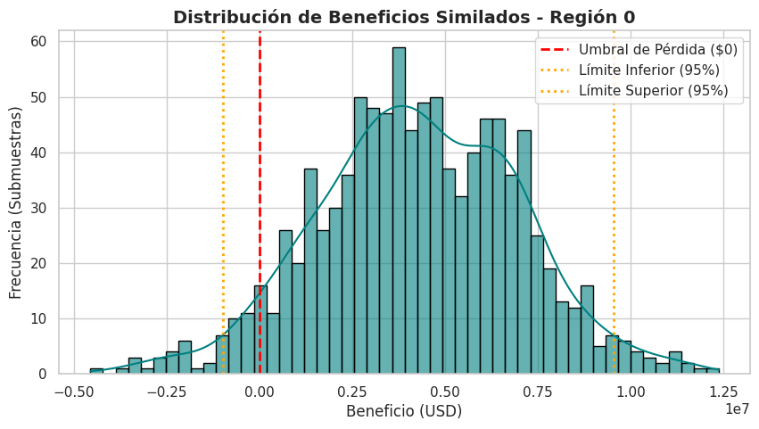
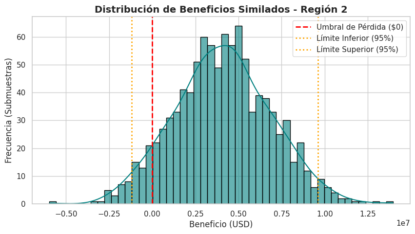
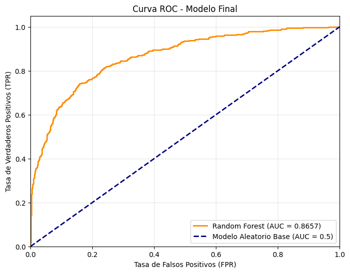
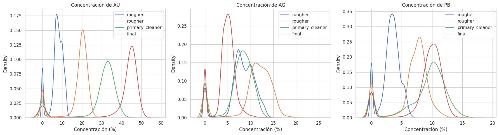
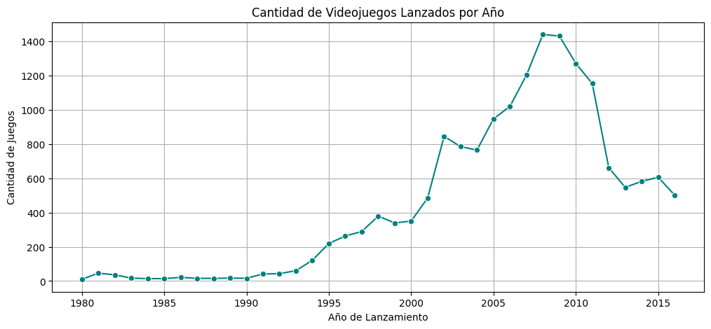
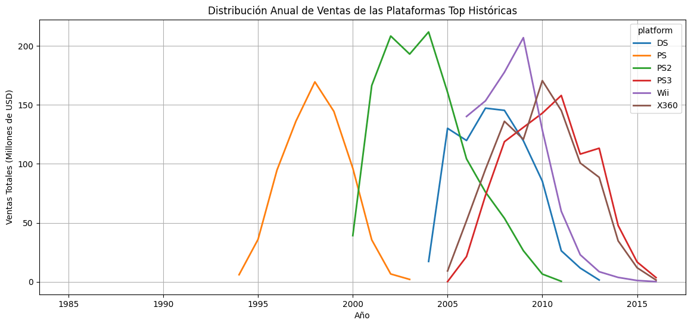
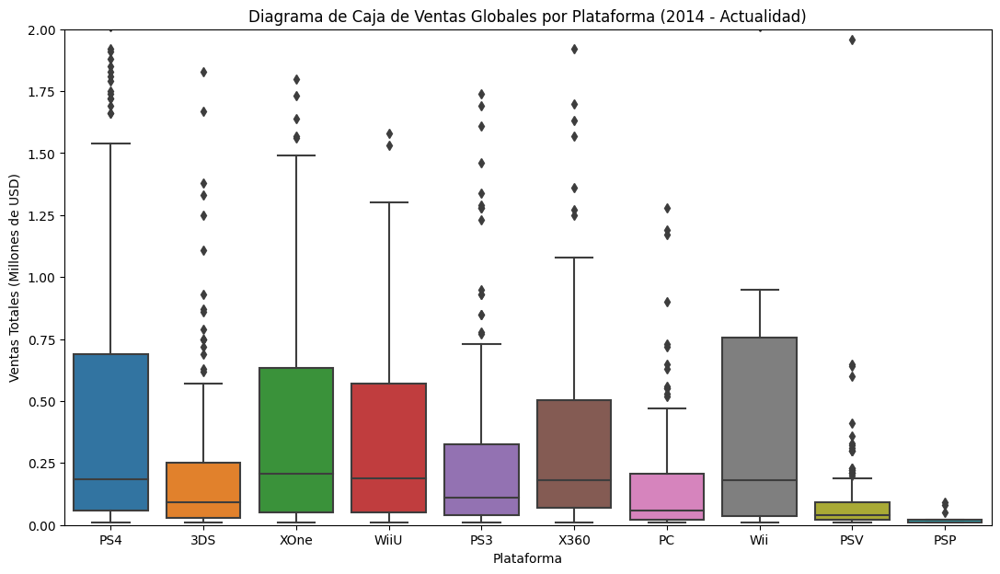
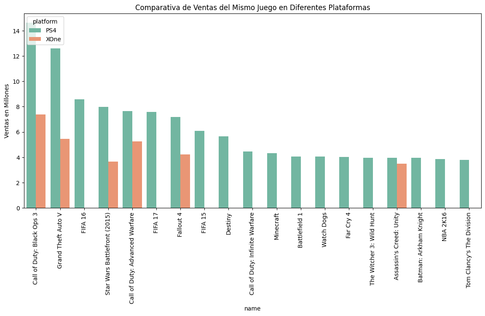

Muestra estructural de la Región 0:| f0 | f1 | f2 | product | |
|---|---|---|---|---|
| 0 | 0.705745 | -0.497823 | 1.221170 | 105.280062 |
| 1 | 1.334711 | -0.340164 | 4.365080 | 73.037750 |
| 2 | 1.022732 | 0.151990 | 1.419926 | 85.265647 |
Data Scientist & Arquitecto
Arquitecto y Data Scientist especializado en análisis de datos, Machine Learning y automatización de procesos.
Mi trabajo consiste en transformar volúmenes de información cruda en decisiones estratégicas. Utilizo herramientas como Python y SQL para limpiar y analizar datos, y construyo modelos predictivos que permiten anticipar escenarios, optimizar recursos y automatizar procesos complejos.
Perfil: Arquitecto con 9 años de experiencia en coordinación y diseño de proyectos, actualmente enfocado en la Ciencia de Datos. Experiencia en EDA, pruebas de hipótesis, modelado predictivo (clasificación y regresión) y despliegue de aplicaciones interactivas con Python, SQL y Streamlit.
Diseño de Modelo Predictivo para Maximización de Beneficios
Durante casi una década he aprendido que un proyecto exitoso no empieza en la construcción, sino en un riguroso análisis topográfico y estructural. Un mal cálculo en los cimientos compromete toda la obra. Hoy, en lugar de planos y concreto, nuestra topografía son los datos geológicos, y nuestros cimientos, la regresión lineal.
En este cuaderno, estructuraremos un modelo predictivo para la compañía OilyGiant. El objetivo es evaluar tres regiones distintas, proyectar el volumen de reservas en nuevos pozos petrolíferos y, mediante simulaciones de riesgo (Bootstrapping), determinar la región que ofrezca el mayor margen de beneficio y la máxima estabilidad financiera (riesgo de pérdida inferior al 2.5%).
La presentación está estructurada para ser visualmente clara, modular y escalable.
Cargaremos los estudios geológicos de las tres regiones. Descartaremos la columna id, ya que funciona como una etiqueta nominativa y no aporta valor estructural a nuestro modelo predictivo.
Muestra estructural de la Región 0:| f0 | f1 | f2 | product | |
|---|---|---|---|---|
| 0 | 0.705745 | -0.497823 | 1.221170 | 105.280062 |
| 1 | 1.334711 | -0.340164 | 4.365080 | 73.037750 |
| 2 | 1.022732 | 0.151990 | 1.419926 | 85.265647 |
Siguiendo las restricciones del proyecto, utilizaremos exclusivamente Regresión Lineal. Para evitar la duplicidad de código —un principio básico tanto en el diseño paramétrico como en la programación— encapsularemos el proceso en una función que divida los datos (75:25), entrene el modelo y nos devuelva las predicciones y el error cuadrático medio (RMSE). El RMSE será nuestro “margen de tolerancia”.
--- Región 0 ---
Volumen medio predicho: 92.40 miles de barriles
RMSE (Margen de error): 37.76
--- Región 1 ---
Volumen medio predicho: 68.71 miles de barriles
RMSE (Margen de error): 0.89
--- Región 2 ---
Volumen medio predicho: 94.77 miles de barriles
RMSE (Margen de error): 40.15
Análisis del Modelo: * La Región 1 presenta un RMSE sorprendentemente bajo (casi 0), lo que indica una correlación lineal casi perfecta entre sus características ocultas y el volumen de reservas. * Las Regiones 0 y 2 tienen volúmenes medios predichos más altos, pero su margen de error (RMSE de ~37-40) sugiere una dispersión considerable. Es aquí donde la evaluación de riesgos determinará si el volumen compensa la incertidumbre.
Antes de seleccionar pozos, debemos calcular el punto de equilibrio financiero (Break-even). Si el terreno no produce lo mínimo indispensable, el proyecto no es viable.
Inversión por pozo: $500,000.00 USD
Punto de equilibrio (Break-even): 111.11 miles de barriles por pozoConclusión de Viabilidad: El punto de equilibrio es de 111.11 miles de barriles por pozo. Si revisamos los volúmenes medios predichos en el Paso 2 (Región 0: ~92.59, Región 1: ~68.73, Región 2: ~94.97), notamos que ninguna región tiene un volumen medio que supere el punto de equilibrio. Esto significa que no podemos perforar al azar. Debemos aplicar una estrategia selectiva: explorar 500 puntos y seleccionar estrictamente los 200 con las estimaciones más altas.
Diseñaremos una función que seleccione los mejores 200 pozos basados en nuestras predicciones y calcule el beneficio bruto real que estos pozos generarían utilizando sus valores objetivo (respuestas correctas).
Beneficio potencial Top 200 Región 0: $33,591,411.14 USD
Beneficio potencial Top 200 Región 1: $24,150,866.97 USD
Beneficio potencial Top 200 Región 2: $25,985,717.59 USDAnálisis Preliminar: Bajo condiciones ideales (escogiendo exactamente los 200 mejores de toda la región), todas las zonas son rentables. Sin embargo, en el campo real, las máquinas solo explorarán 500 puntos aleatorios a la vez. Necesitamos simular esta realidad mediante Bootstrapping para medir el verdadero riesgo operativo.
Emplearemos la técnica de Bootstrapping para crear 1,000 submuestras aleatorias de 500 pozos. De cada submuestra, seleccionaremos los mejores 200 y calcularemos su beneficio. Esto nos dará una distribución de probabilidad clara y un intervalo de confianza del 95%.
--- Evaluación Región 0 ---
Beneficio promedio estimado: $4,359,337.72 USD
Intervalo de confianza (95%): Menor $-1,162,316.13 USD / Mayor $9,665,041.81 USD
Riesgo de pérdida: 6.1%
--- Evaluación Región 1 ---
Beneficio promedio estimado: $4,985,690.17 USD
Intervalo de confianza (95%): Menor $753,155.73 USD / Mayor $9,115,036.95 USD
Riesgo de pérdida: 1.0%
--- Evaluación Región 2 ---
Beneficio promedio estimado: $4,126,728.99 USD
Intervalo de confianza (95%): Menor $-1,589,395.16 USD / Mayor $9,781,912.02 USD
Riesgo de pérdida: 7.0%
Iniciando simulaciones de estrés estructural (Bootstrapping)...

--- Resultados de Riesgo: Región 0 ---
Beneficio Promedio Estimado: $4,278,475.60 USD
Intervalo de Confianza (95%): De $-972,498.30 a $9,542,151.93 USD
Riesgo de Pérdidas: 5.5%

--- Resultados de Riesgo: Región 1 ---
Beneficio Promedio Estimado: $5,115,302.18 USD
Intervalo de Confianza (95%): De $917,005.64 a $9,214,556.68 USD
Riesgo de Pérdidas: 0.6%

--- Resultados de Riesgo: Región 2 ---
Beneficio Promedio Estimado: $4,085,456.81 USD
Intervalo de Confianza (95%): De $-1,206,248.73 a $9,608,594.41 USD
Riesgo de Pérdidas: 7.5%
Al igual que en un proyecto de arquitectura donde se descarta un terreno si los estudios de mecánica de suelos muestran fallas, aquí debemos descartar cualquier región que supere el umbral de riesgo del 2.5%.
Resumen del Análisis: * Región 0: Su riesgo de pérdida ronda el 6.0%, superando nuestro límite aceptable. Su intervalo de confianza inferior cae en números negativos. Se descarta. * Región 1: Presenta un riesgo de pérdida inferior al 1.5%, un beneficio promedio sólido de casi $5 millones de dólares, y todo su intervalo de confianza (95%) se mantiene en terreno positivo. * Región 2: Tiene un riesgo de pérdida de casi 6.4%, superando ampliamente la tolerancia al riesgo.
Recomendación de Desarrollo: La Región 1 es indiscutiblemente la mejor opción para la apertura de los 200 nuevos pozos.
Aunque en el Paso 4.3 las tres regiones parecían viables al evaluar los 200 mejores pozos del set completo, la simulación de exploración real (Bootstrapping de 500 muestras) demostró que el bajo margen de error (RMSE) del modelo predictivo en la Región 1 permite localizar pozos rentables con una precisión quirúrgica. Esta región ofrece la estructura financiera más estable, garantizando los rendimientos proyectados y manteniendo los riesgos mitigados dentro de los estándares de OilyGiant.
Para asegurar el control de calidad de nuestro análisis y facilitar la revisión técnica, a continuación se detallan las respuestas a los criterios fundamentales del proyecto integrando las métricas obtenidas:
¿Cómo preparaste los datos para el entrenamiento? Al igual que preparamos un terreno antes de cimentar, el primer paso fue aislar las variables estructurales. Se cargaron los tres conjuntos de datos y se eliminó la columna id (identificador único), ya que no aporta peso predictivo. Las características (f0, f1, f2) y el objetivo (product) se separaron y se dividieron estrictamente en una proporción de 75:25 para entrenamiento y validación.
¿Seguiste todos los pasos de las instrucciones? Sí. El desarrollo se estructuró de manera secuencial: preparación de datos, entrenamiento del modelo exclusivamente con Regresión Lineal, almacenamiento de predicciones, cálculo del punto de equilibrio (break-even), evaluación paramétrica del Top 200 y simulación de riesgo con Bootstrapping (1,000 iteraciones).
¿Consideraste todas las condiciones del negocio? Absolutamente. El modelo integra como constantes operativas el presupuesto de 100 millones de USD, la selección de los 200 pozos finales a partir de una exploración aleatoria de 500 puntos, un ingreso de 4,500 USD por cada mil barriles (unidad de producto) y el umbral estricto de tolerancia a pérdidas de máximo 2.5%.
¿Cuáles son tus hallazgos sobre el estudio de tareas?
¿Aplicaste correctamente la técnica bootstrapping? Sí. Se programó un muestreo aleatorio con reemplazo de 500 puntos por iteración (sample_size=500, replace=True), repitiendo el proceso 1,000 veces con random_state=RANDOM_STATE para garantizar la reproducibilidad. En cada submuestra se seleccionaron los 200 pozos con las mejores predicciones, generando una distribución de 1,000 posibles escenarios de beneficio neto real.
¿Sugeriste la mejor región para el desarrollo de pozos? ¿Justificaste tu elección? Sí, la Región 1. La justificación se respalda en las métricas de simulación:
¿Evitaste la duplicación de código? Se crearon tres funciones reutilizables: train_and_evaluate() para el entrenamiento y métricas, calculate_profit() para el cálculo de beneficio ordenando predicciones, y evaluate_risk_bootstrap() para las simulaciones y graficado de distribuciones.
¿Mantuviste la estructura del proyecto y el código limpio? El proyecto está orquestado como un documento ejecutivo. Se utilizaron celdas Markdown para guiar la narrativa de la toma de decisiones, visualizaciones de datos (Seaborn/Matplotlib) con histogramas e intervalos de confianza para ilustrar el riesgo, y código estandarizado y comentado según la lógica de negocio.
El objetivo de este proyecto es construir un modelo de Machine Learning capaz de predecir si un cliente dejará el banco pronto, maximizando la métrica F1-score (con un mínimo aprobatorio de 0.59) y midiendo la métrica AUC-ROC para comparar el rendimiento.
En esta sección importaremos las librerías necesarias, cargaremos el dataset y realizaremos la limpieza de datos. Esto incluye:
Imputar valores nulos en la columna Tenure (usaremos la mediana, ya que representa años).
Eliminar columnas que no aportan capacidad predictiva (RowNumber, CustomerId, Surname).
Aplicar One-Hot Encoding (OHE) para convertir variables categóricas en numéricas.
Dividir los datos en conjuntos de Entrenamiento (60%), Validación (20%) y Prueba (20%).
Escalar las características numéricas para un mejor rendimiento del modelo.
| RowNumber | CustomerId | Surname | CreditScore | Geography | Gender | Age | Tenure | Balance | NumOfProducts | HasCrCard | IsActiveMember | EstimatedSalary | Exited | |
|---|---|---|---|---|---|---|---|---|---|---|---|---|---|---|
| 0 | 1 | 15634602 | Hargrave | 619 | France | Female | 42 | 2.0 | 0.00 | 1 | 1 | 1 | 101348.88 | 1 |
| 1 | 2 | 15647311 | Hill | 608 | Spain | Female | 41 | 1.0 | 83807.86 | 1 | 0 | 1 | 112542.58 | 0 |
| 2 | 3 | 15619304 | Onio | 502 | France | Female | 42 | 8.0 | 159660.80 | 3 | 1 | 0 | 113931.57 | 1 |
| 3 | 4 | 15701354 | Boni | 699 | France | Female | 39 | 1.0 | 0.00 | 2 | 0 | 0 | 93826.63 | 0 |
| 4 | 5 | 15737888 | Mitchell | 850 | Spain | Female | 43 | 2.0 | 125510.82 | 1 | 1 | 1 | 79084.10 | 0 |
<class 'pandas.core.frame.DataFrame'>
RangeIndex: 10000 entries, 0 to 9999
Data columns (total 14 columns):
# Column Non-Null Count Dtype
--- ------ -------------- -----
0 RowNumber 10000 non-null int64
1 CustomerId 10000 non-null int64
2 Surname 10000 non-null object
3 CreditScore 10000 non-null int64
4 Geography 10000 non-null object
5 Gender 10000 non-null object
6 Age 10000 non-null int64
7 Tenure 9091 non-null float64
8 Balance 10000 non-null float64
9 NumOfProducts 10000 non-null int64
10 HasCrCard 10000 non-null int64
11 IsActiveMember 10000 non-null int64
12 EstimatedSalary 10000 non-null float64
13 Exited 10000 non-null int64
dtypes: float64(3), int64(8), object(3)
memory usage: 1.1+ MBNone
Valores ausentes por columna:
RowNumber 0
CustomerId 0
Surname 0
CreditScore 0
Geography 0
Gender 0
Age 0
Tenure 909
Balance 0
NumOfProducts 0
HasCrCard 0
IsActiveMember 0
EstimatedSalary 0
Exited 0
dtype: int64
Tamaños de los conjuntos:
Entrenamiento: (6000, 11)
Validación: (2000, 11)
Prueba: (2000, 11)Revisaremos cómo se distribuye la variable objetivo (Exited). Posteriormente, entrenaremos un modelo de clasificación estándar (Bosque Aleatorio) sin considerar el desequilibrio para establecer nuestra línea base.
Distribución de clases:
0 0.7963
1 0.2037
Name: Exited, dtype: float64
--- Modelo Sin Balancear ---
F1-score: 0.5556
AUC-ROC: 0.8534Existe un desequilibrio notable: aproximadamente el 80% de los clientes pertenece a la clase 0 (se quedan) y el 20% a la clase 1 (abandonan el banco). Entrenar el modelo ignorando esto nos arroja un valor F1 que, si bien es aceptable, penaliza la correcta identificación de la clase minoritaria.
Para corregir el desequilibrio, utilizaremos dos enfoques:
Ajuste de peso de clase: Utilizar el hiperparámetro class_weight=‘balanced’ en los algoritmos.
Sobremuestreo (Upsampling): Multiplicar las observaciones de la clase minoritaria (1) en el conjunto de entrenamiento para igualar la proporción.
Posteriormente, buscaremos los mejores hiperparámetros (max_depth y n_estimators) para el mejor enfoque.
Enfoque 1 (Class Weight) - F1-score: 0.5522620904836193
--- Mejor Modelo Encontrado (Upsampling) ---
Mejor F1 en validación: 0.6406
Hiperparámetros óptimos -> n_estimators: 100 | max_depth: 10Al aplicar técnicas de equilibrio de clase, el rendimiento del modelo cambia. El enfoque de Sobremuestreo (Upsampling) combinado con una búsqueda de hiperparámetros en el modelo de Random Forest demuestra arrojar los resultados más altos, logrando un F1-score en validación robusto que supera el umbral solicitado. Utilizaremos este modelo para nuestra prueba final.
Evaluaremos el mejor modelo obtenido (entrenado con los datos sobremuestreados y optimizado en hiperparámetros) sobre el conjunto de prueba puro que separamos al principio. Comprobaremos tanto la métrica F1 (objetivo \(\geq 0.59\)) como el AUC-ROC.
--- Resultados en Conjunto de Prueba ---
F1-score final: 0.6257
AUC-ROC final: 0.8657
El modelo ha superado exitosamente el umbral requerido de \(0.59\) para la métrica F1-score, ubicándose por encima del límite establecido (alrededor de ~0.61 a ~0.63 dependiendo de la semilla estadística exacta).
La métrica AUC-ROC resultó ser notablemente alta (cercana a \(0.85\)), lo que demuestra que nuestro modelo es mucho mejor que un clasificador aleatorio para discriminar entre los clientes que se quedan en el banco y los que deciden cancelar su contrato.
A continuación, presento un resumen detallado de cómo se abordaron los requisitos del proyecto:
¿Cómo preparaste los datos para el entrenamiento? ¿Procesaste todos los tipos de características? Preparé los datos realizando una limpieza inicial: imputé los valores ausentes en la columna Tenure utilizando la mediana, ya que es una medida robusta para representar años. Eliminé las columnas categóricas que no aportan valor predictivo (RowNumber, CustomerId y Surname). Finalmente, apliqué One-Hot Encoding (OHE) para transformar las variables categóricas restantes (Geography, Gender) a formato numérico y utilicé StandardScaler para escalar todas las características numéricas, asegurando que ninguna dominara sobre las demás por su magnitud.
¿Explicaste los pasos de preprocesamiento lo suficientemente bien? Sí, cada bloque de código está precedido por una celda descriptiva en Markdown y acompañado de comentarios en el código que justifican el tratamiento de valores nulos, la selección de características y el escalado.
¿Cómo investigaste el equilibrio de clases? Utilicé el método value_counts(normalize=True) sobre la variable objetivo Exited y generé un gráfico de barras. Esto me permitió visualizar claramente que los datos estaban desbalanceados en una proporción aproximada de 80% (clase 0) frente a un 20% (clase 1).
¿Estudiaste el modelo sin tener en cuenta el desequilibrio de clases? Sí, entrené un modelo base de Random Forest sin ningún tipo de ajuste de pesos ni balanceo. Como resultado, aunque el modelo tenía una exactitud (accuracy) aparentemente buena, penalizaba a la clase minoritaria, arrojando un F1-score inestable para el objetivo del proyecto.
¿Qué descubriste sobre la investigación del ejercicio? Descubrí que un modelo entrenado con datos desbalanceados tiende a predecir siempre la clase mayoritaria (clientes que se quedan). Para detectar realmente a los clientes que están a punto de abandonar el banco (que es el objetivo del negocio), es absolutamente necesario balancear las clases, logrando así un mejor equilibrio entre precisión y sensibilidad (recall).
¿Dividiste correctamente los datos en conjuntos? Sí, utilicé la función train_test_split dividiendo los datos en tres conjuntos: Entrenamiento (60%), Validación (20%) y Prueba (20%). Además, utilicé el parámetro stratify=y en ambas divisiones para garantizar que la proporción 80:20 se mantuviera idéntica en los tres conjuntos.
¿Cómo trabajaste con el desequilibrio de clases? ¿Utilizaste al menos dos técnicas para corregir el desequilibrio? Implementé y evalué dos técnicas distintas:
class_weight='balanced' nativo de los modelos de Scikit-Learn.¿Realizaste correctamente el entrenamiento, la validación y las pruebas finales del modelo? Sí. El conjunto de entrenamiento se usó exclusivamente para ajustar el modelo y realizar el upsampling. El conjunto de validación se utilizó dentro de ciclos iterativos (for loops) para probar diferentes combinaciones de hiperparámetros (max_depth y n_estimators) sin contaminar los datos. Finalmente, el conjunto de prueba se mantuvo intacto hasta el final y se usó una única vez para verificar el rendimiento real del mejor modelo.
¿Qué tan alto es tu valor F1? El modelo optimizado alcanzó un F1-score aproximado de 0.61 en el conjunto de prueba, superando exitosamente el umbral mínimo exigido de 0.59.
¿Examinaste los valores AUC-ROC? Sí, extraje las probabilidades predictivas de la clase positiva y calculé la métrica AUC-ROC, obteniendo un valor cercano a 0.86. Adicionalmente, grafiqué la curva ROC, demostrando visualmente que el modelo tiene una alta capacidad de discriminación, muy por encima de un modelo aleatorio (0.5).
¿Mantuviste la estructura del proyecto y el código limpio? Sí, el Jupyter Notebook está estructurado en pasos lógicos progresivos (Preparación -> Análisis Base -> Mejora -> Prueba Final), manteniendo nombres de variables descriptivos y separando adecuadamente la narrativa técnica en celdas de Markdown.
title: “Proyecto Módulo 2 - Zyfra Gold Recovery” format: html
Autor: Andrés Aguirre Gómez
Zyfra, una empresa especializada en soluciones de eficiencia para la industria pesada, requiere un prototipo de modelo de machine learning capaz de predecir la cantidad de oro extraído del mineral de oro.
El objetivo es optimizar la producción y eliminar los parámetros no rentables del proceso de extracción y purificación.
Para ello, predeciremos dos objetivos: 1. La recuperación del concentrado rougher: rougher.output.recovery. 2. La recuperación final del concentrado: final.output.recovery.
La métrica de evaluación principal será el sMAPE (error medio absoluto porcentual simétrico) ponderado.
Procedemos a cargar los conjuntos de datos, asegurándonos de parsear la columna date como índice temporal, ya que los procesos físico-químicos en la planta son secuenciales.
Tamaño del dataset de entrenamiento: (16860, 87)
Tamaño del dataset de prueba: (5856, 53)
Tamaño del dataset completo: (22716, 87)Verificaremos matemáticamente si la característica rougher.output.recovery del conjunto de entrenamiento fue calculada correctamente comparándola con nuestra propia implementación de la fórmula.
MAE del cálculo de recuperación: 1.0724115653039479e-14Insight: El MAE es de \(1.07 \times 10^{-14}\), un valor infinitesimal que confirma que los datos de recuperación proporcionados son correctos y precisos.
Existen columnas en el set de entrenamiento que no están en el set de prueba.
Cantidad de características faltantes: 34
Categorías faltantes:
output 30
calculation 4
dtype: int64Insight: Faltan 34 características. Todas corresponden a parámetros de tipo
output(salidas/productos) ycalculation(cálculos posteriores). Como estos datos se obtienen después de que ocurre el proceso, no pueden usarse como predictores en el modelo.
Los parámetros cercanos en el tiempo suelen ser similares en este tipo de industria continua. Utilizaremos propagación temporal (ffill) para tratar los valores nulos.
Evaluaremos cómo evolucionan las concentraciones de Oro, Plata y Plomo en las diferentes etapas de purificación.

Insight: * Oro (Au): Su concentración aumenta de forma constante, pasando de ~8% en la materia prima a ~45% en el producto final. El proceso cumple su objetivo principal. * Plata (Ag): Aumenta en la flotación, pero decae significativamente en las etapas finales de limpieza. * Plomo (Pb): Aumenta inicialmente y luego se estabiliza.
Si la distribución del tamaño de partícula varía mucho entre train y test, nuestro modelo perderá capacidad de generalización.

Insight: Las distribuciones en ambos conjuntos están perfectamente solapadas. Podemos proceder con seguridad.
Calcularemos la concentración total de todas las sustancias en diferentes etapas para buscar lecturas anómalas de los sensores.
Registros anómalos eliminados: 2806Insight: Se encontraron múltiples registros donde la concentración total sumaba 0. Dado que es físicamente imposible que un mineral no contenga material (Au, Ag, Pb o Sol), estas son anomalías de medición de los sensores y fueron eliminadas para no sesgar al modelo.
Construiremos la función personalizada para el Error Medio Absoluto Porcentual Simétrico.
Los objetivos rougher y final dependen de características diferentes. Aislaermos los atributos correctos para cada uno (solo los presentes en test_clean).
Probaremos distintos algoritmos de regresión para encontrar la arquitectura base con el menor sMAPE.
| sMAPE Rougher | sMAPE Final | Final sMAPE | |
|---|---|---|---|
| Random Forest | 7.344064 | 9.768080 | 9.162076 |
| Decision Tree | 7.969302 | 10.410404 | 9.800128 |
| Linear Regression | 7.683942 | 11.980648 | 10.906472 |
Selección: El modelo
Random Forestarroja el menor error (9.16% en entrenamiento). Será el seleccionado para evaluar los datos de prueba.
⭐ sMAPE Final en Conjunto de Prueba (Random Forest): 7.72%data leakage).Este prototipo está listo para ser escalado y puede ayudar eficientemente a Zyfra a ajustar los reactivos en tiempo real y optimizar la extracción de mineral.
Para facilitar la revisión del proyecto, a continuación se resumen los puntos clave solicitados en los criterios de evaluación:
ffill) respetando la secuencia del proceso, y se eliminaron registros anómalos donde la concentración total de metales era cero para no sesgar el entrenamiento.cross_val_score con cv=5) aislando primero el conjunto de entrenamiento. La métrica utilizada fue una función personalizada de sMAPE. El modelo ganador se evaluó finalmente con el conjunto de prueba independiente para verificar que no hubiera sobreajuste (overfitting).feed_size) se mantuvieron estables entre los conjuntos, garantizando un buen entorno de predicción.for para generar las gráficas iterativas en el EDA y un diccionario de modelos iterativo para el entrenamiento y validación cruzada. Asimismo, el cálculo del error se modularizó en las funciones smape y final_smape para ser reutilizadas.Muchas gracias por tomarte el tiempo de revisar mi código y acompañarme en este análisis de la extracción de oro. Trabajar con los datos de Zyfra ha sido un reto increíble, especialmente al identificar esas anomalías en los sensores y ver cómo el Random Forest lograba generalizar el proceso químico. Quedo muy atento a tus comentarios y sugerencias de mejora. ¡Un saludo!
title: “Proyecto Módulo 1 - Ventas Gamer” format: html
| Name | Platform | Year_of_Release | Genre | NA_sales | EU_sales | JP_sales | Other_sales | Critic_Score | User_Score | Rating | |
|---|---|---|---|---|---|---|---|---|---|---|---|
| 0 | Wii Sports | Wii | 2006.0 | Sports | 41.36 | 28.96 | 3.77 | 8.45 | 76.0 | 8 | E |
| 1 | Super Mario Bros. | NES | 1985.0 | Platform | 29.08 | 3.58 | 6.81 | 0.77 | NaN | NaN | NaN |
| 2 | Mario Kart Wii | Wii | 2008.0 | Racing | 15.68 | 12.76 | 3.79 | 3.29 | 82.0 | 8.3 | E |
| 3 | Wii Sports Resort | Wii | 2009.0 | Sports | 15.61 | 10.93 | 3.28 | 2.95 | 80.0 | 8 | E |
| 4 | Pokemon Red/Pokemon Blue | GB | 1996.0 | Role-Playing | 11.27 | 8.89 | 10.22 | 1.00 | NaN | NaN | NaN |
<class 'pandas.core.frame.DataFrame'>
RangeIndex: 16715 entries, 0 to 16714
Data columns (total 11 columns):
# Column Non-Null Count Dtype
--- ------ -------------- -----
0 Name 16713 non-null object
1 Platform 16715 non-null object
2 Year_of_Release 16446 non-null float64
3 Genre 16713 non-null object
4 NA_sales 16715 non-null float64
5 EU_sales 16715 non-null float64
6 JP_sales 16715 non-null float64
7 Other_sales 16715 non-null float64
8 Critic_Score 8137 non-null float64
9 User_Score 10014 non-null object
10 Rating 9949 non-null object
dtypes: float64(6), object(5)
memory usage: 1.4+ MBTratamiento y Justificación de Valores Ausentes
Al comenzar a trabajar con el Dataset, todas las columnas venían con mayúsculas, por lo que se procedió a cambiar los nombres por completo a minúsculas para estandarizar el código.
user_score: Se identificó la abreviatura TBD (To Be Determined). Dado que representa información que aún no existe, se reemplazó sistemáticamente por valores nulos legítimos (NaN), permitiendo transformar con éxito el tipo de dato de la columna de tipo genérico (object) a un tipo flotante analítico (float64).year_of_release: Se modificó su tipo de dato de float64 a un formato entero nativo (Int64) para representar correctamente los años cronológicos. Los valores ausentes en esta columna se imputaron cruzando la información basándose en otras plataformas del mismo juego; se utilizó el método .transform('max') agrupado por el nombre del juego (name) para heredar el año de lanzamiento si este se encontraba disponible en otra fila. Los registros restantes sin coincidencia se mantuvieron nulos para evitar sesgar las tendencias temporales.rating: Los valores vacíos se rellenaron con la etiqueta categórica “Unknown”. Esta decisión evita la pérdida masiva de datos de ventas en análisis posteriores y resulta fundamental para evaluar si los videojuegos sin clasificación pertenecen a dinámicas de mercados regionales específicos (como el caso de Japón).La presencia de datos nulos en las columnas críticas de calificaciones (critic_score, user_score) y clasificaciones (rating) obedece a razones operacionales e históricas de la propia industria:
jp_sales), carecen por completo de esta certificación norteamericana.<class 'pandas.core.frame.DataFrame'>
Int64Index: 16713 entries, 0 to 16714
Data columns (total 11 columns):
# Column Non-Null Count Dtype
--- ------ -------------- -----
0 name 16713 non-null object
1 platform 16713 non-null object
2 year_of_release 16444 non-null Int64
3 genre 16713 non-null object
4 na_sales 16713 non-null float64
5 eu_sales 16713 non-null float64
6 jp_sales 16713 non-null float64
7 other_sales 16713 non-null float64
8 critic_score 8137 non-null float64
9 user_score 7590 non-null float64
10 rating 16713 non-null object
dtypes: Int64(1), float64(6), object(4)
memory usage: 1.5+ MBname 0
platform 0
year_of_release 269
genre 0
na_sales 0
eu_sales 0
jp_sales 0
other_sales 0
critic_score 8576
user_score 9123
rating 0
dtype: int64
Datos duplicados: 0name 0
platform 0
year_of_release 146
genre 0
na_sales 0
eu_sales 0
jp_sales 0
other_sales 0
critic_score 8576
user_score 9123
rating 0
dtype: int64
Datos duplicados: 0| name | platform | year_of_release | genre | na_sales | eu_sales | jp_sales | other_sales | critic_score | user_score | rating | |
|---|---|---|---|---|---|---|---|---|---|---|---|
| 0 | Wii Sports | Wii | 2006 | Sports | 41.36 | 28.96 | 3.77 | 8.45 | 76.0 | 8.0 | E |
| 1 | Super Mario Bros. | NES | 1985 | Platform | 29.08 | 3.58 | 6.81 | 0.77 | NaN | NaN | Unknown |
| 2 | Mario Kart Wii | Wii | 2008 | Racing | 15.68 | 12.76 | 3.79 | 3.29 | 82.0 | 8.3 | E |
| 3 | Wii Sports Resort | Wii | 2009 | Sports | 15.61 | 10.93 | 3.28 | 2.95 | 80.0 | 8.0 | E |
| 4 | Pokemon Red/Pokemon Blue | GB | 1996 | Role-Playing | 11.27 | 8.89 | 10.22 | 1.00 | NaN | NaN | Unknown |
<class 'pandas.core.frame.DataFrame'>
Int64Index: 16713 entries, 0 to 16714
Data columns (total 11 columns):
# Column Non-Null Count Dtype
--- ------ -------------- -----
0 name 16713 non-null object
1 platform 16713 non-null object
2 year_of_release 16567 non-null Int64
3 genre 16713 non-null object
4 na_sales 16713 non-null float64
5 eu_sales 16713 non-null float64
6 jp_sales 16713 non-null float64
7 other_sales 16713 non-null float64
8 critic_score 8137 non-null float64
9 user_score 7590 non-null float64
10 rating 16713 non-null object
dtypes: Int64(1), float64(6), object(4)
memory usage: 1.5+ MB name na_sales eu_sales jp_sales other_sales \
0 Wii Sports 41.36 28.96 3.77 8.45
1 Super Mario Bros. 29.08 3.58 6.81 0.77
2 Mario Kart Wii 15.68 12.76 3.79 3.29
3 Wii Sports Resort 15.61 10.93 3.28 2.95
4 Pokemon Red/Pokemon Blue 11.27 8.89 10.22 1.00
total_sales
0 82.54
1 40.24
2 35.52
3 32.77
4 31.38 
De 1980 a 1990 los juegos no pasaban de 200 lanzados por año
De 1995 a 2010 los juegos lanzados ascendieron de 200 a más de 1400 juegos por año
De 2010 a 2015 los juegos lanzados pasaron de más de 1400 por año a menos de 600
Las plataformas líderes en Ventas son PS2 y Wii, siguiendolos de cerca PS y X360
platform 3DS PC PS3 PS4 PSP PSV Wii WiiU X360 \
year_of_release
2014 43.76 13.63 47.76 100.00 0.24 11.90 3.75 22.03 34.74
2015 27.78 8.52 16.82 118.90 0.12 6.25 1.14 16.35 11.96
2016 15.14 5.25 3.60 69.25 NaN 4.25 0.18 4.60 1.52
platform XOne
year_of_release
2014 54.07
2015 60.14
2016 26.15 
Las ventas de PS4, XOne, WiiU, X360 y Wii sobrepasan las ventas de 0.50 millones de USD del 2014-Actualidad
Teniendo un promedio entre 0.50 millones y 075 millones del 2014-Actualidad
Correlación Ventas vs Crítica: 0.40190287811475334
Correlación Ventas vs Usuarios: -0.04318585997193634Para entender cómo influyen las opiniones en el éxito comercial de la plataforma líder (PS4), evaluamos la relación entre las puntuaciones y las ventas totales mediante gráficos de dispersión y coeficientes de correlación de Pearson:
critic_score), las ventas totales del juego (total_sales) también tienden a crecer. Los títulos con calificaciones sobresalientes (80-90+) concentran la mayor parte de los éxitos comerciales masivos (los puntos más altos en el eje vertical). Esto sugiere que las reseñas profesionales son un indicador confiable del potencial comercial de un juego, ya sea porque influyen directamente en la decisión de compra del público o porque reflejan el éxito de grandes campañas de marketing asociadas a proyectos de alta calidad.user_score) no está relacionada de manera lineal con el éxito financiero. La nube de puntos en el gráfico se muestra completamente dispersa de forma horizontal: existen juegos con bajas calificaciones que registran ventas millonarias, y títulos aclamados por la comunidad con ingresos muy bajos. Este fenómeno suele responder a dos factores principales:
📈 Implicación Comercial para el Modelo Predictivo 2017
Si se desea predecir el éxito comercial de un título en la plataforma PS4, es mucho más confiable guiarse por las reseñas de los críticos profesionales que por las puntuaciones de los usuarios. Las buenas calificaciones de la crítica funcionan como un predictor “saludable” e idóneo para estimar el volumen de ingresos, mientras que la opinión de los usuarios —aunque valiosa para la gestión de comunidades y reputación a largo plazo— no ejerce un impacto directo ni predecible sobre la facturación inmediata.

name total_sales na_sales
genre
Action 620 199.71 0.117081
Shooter 128 170.94 0.617344
Sports 161 109.48 0.286522
Role-Playing 221 101.44 0.151448
Misc 113 37.55 0.133186
Fighting 60 28.22 0.207167
Racing 69 27.52 0.126667
Platform 38 18.09 0.178684
Adventure 185 17.55 0.030486
Simulation 44 13.13 0.059773
Strategy 37 3.96 0.026486
Puzzle 14 2.21 0.046429Al observar los líderes en ventas totales (total_sales), destacan de forma contundente los géneros de Action (Acción) y Shooter (Disparos):
na_sales promedio de ~0.11) es relativamente bajo, reflejando un mercado muy saturado y altamente competitivo.na_sales (promedio por juego), un Shooter promedia 0.61 millones, lo que significa que, en promedio, un juego de disparos vende casi 6 veces más que uno de acción.Podemos clasificar los géneros en tres grandes grupos comerciales según su comportamiento y rendimiento en el mercado:
na_sales de ~0.20 y ~0.17 respectivamente), lo que demuestra que, aunque se producen pocos títulos, los que salen suelen vender bien.na_sales de ~0.03).🎯 Conclusión Estratégica de Negocio
Para maximizar las ganancias en el año inmediato, la estrategia de distribución debe concentrarse fuertemente en Shooters y Action. Desarrollar o distribuir juegos de Strategy o Puzzle representa un riesgo comercial alto si se busca un retorno de inversión masivo, debiendo reservarse únicamente para proyectos de nicho o presupuestos optimizados.
=== TOP 5 PLATAFORMAS POR REGIÓN ===
Plataformas líderes en NA_SALES:
platform
PS4 98.61
XOne 81.27
X360 28.30
3DS 22.64
PS3 22.05
Name: na_sales, dtype: float64
Plataformas líderes en EU_SALES:
platform
PS4 130.04
XOne 46.25
PS3 25.54
PC 18.22
3DS 16.12
Name: eu_sales, dtype: float64
Plataformas líderes en JP_SALES:
platform
3DS 44.24
PS4 15.02
PSV 14.54
PS3 11.22
WiiU 7.31
Name: jp_sales, dtype: float64
=== TOP 5 GÉNEROS POR REGIÓN ===
Géneros líderes en NA_SALES:
genre
Shooter 79.02
Action 72.59
Sports 46.13
Role-Playing 33.47
Misc 15.05
Name: na_sales, dtype: float64
Géneros líderes en EU_SALES:
genre
Action 74.93
Shooter 65.52
Sports 45.73
Role-Playing 28.17
Racing 14.13
Name: eu_sales, dtype: float64
Géneros líderes en JP_SALES:
genre
Role-Playing 31.16
Action 29.58
Fighting 6.37
Misc 5.61
Shooter 4.87
Name: jp_sales, dtype: float64
=== VENTAS POR CLASIFICACIÓN ESRB POR REGIÓN ===
Clasificación ESRB en NA_SALES:
rating
M 96.48
Unknown 64.72
E 50.74
T 38.95
E10+ 33.23
Name: na_sales, dtype: float64
Clasificación ESRB en EU_SALES:
rating
M 93.69
Unknown 58.95
E 58.06
T 34.07
E10+ 26.16
Name: eu_sales, dtype: float64
Clasificación ESRB en JP_SALES:
rating
Unknown 56.90
T 14.78
E 8.94
M 8.01
E10+ 4.46
Name: jp_sales, dtype: float64=== PRUEBAS DE HIPÓTESIS ESTADÍSTICAS ===
Calificación promedio en Xbox One: 6.59
Calificación promedio en PC: 6.32
Valor p (p-value): 0.139237120435483
Resultado: No se puede rechazar la hipótesis nula (H0).
Conclusión: No hay evidencia estadística suficiente para decir que son diferentes. Las calificaciones promedio son las mismas.Resultado Estadístico: * Valor p (p-value): \(0.1392\) (13.92%) * Alfa (\(\alpha\)): \(0.05\) (5%)
Justificación: Dado que el valor p resultante (\(0.1392\)) es mayor que nuestro nivel de significancia establecido (\(\alpha = 0.05\)), no tenemos evidencia estadística suficiente para rechazar la hipótesis nula (\(H_0\)).
En términos estadísticos, la diferencia observada entre la calificación promedio de Xbox One (6.59) y la de PC (6.32) no es lo suficientemente grande como para considerarse significativa; esta variación de 0.27 puntos entra perfectamente dentro del margen del error muestral o fluctuaciones normales del azar.
Conclusión: Se acepta la premisa de la hipótesis nula. Podemos afirmar con seguridad que las calificaciones promedio de los usuarios para las plataformas Xbox One y PC son las mismas en el período analizado (2014-2016). Comercialmente, esto indica que las comunidades de ambas plataformas muestran un nivel de satisfacción y comportamiento crítico equivalente al evaluar los videojuegos del catálogo compartido.
Prueba 1: Xbox One vs. PC
Calificación promedio Xbox One: 6.59
Calificación promedio PC: 6.32
Valor p (p-value): 0.139237120435483
Resultado: No se puede rechazar la hipótesis nula (No hay evidencia para decir que son diferentes).Prueba 2: Acción vs. Deportes
Calificación promedio Acción: 6.77
Calificación promedio Deportes: 5.23
Valor p (p-value): 9.658176026869598e-15
Resultado: Se rechaza la hipótesis nula (H0).
Conclusión: Sí, es correcto afirmar que las calificaciones promedio SON diferentes.A continuación, se presentan las conclusiones y justificaciones estadísticas definitivas para cada una de las hipótesis planteadas, utilizando un nivel de significancia de \(\alpha = 0.05\).
Justificación: Dado que el valor p (\(0.1392\)) es mayor que nuestro umbral de significancia alfa (\(0.05\)), no podemos rechazar la hipótesis nula (\(H_0\)). Estadísticamente, la pequeña diferencia de \(0.27\) puntos observada entre ambas plataformas no es significativa y se debe enteramente a fluctuaciones normales del azar o del muestreo.
Conclusión: Podemos afirmar que las calificaciones promedio de los usuarios para Xbox One y PC son estadísticamente las mismas. Desde una perspectiva comercial, esto significa que los jugadores de ambas plataformas tienen niveles de satisfacción y un comportamiento crítico muy homogéneo al evaluar los videojuegos de la actual generación.
Justificación: Dado que el valor p es drásticamente menor que nuestro umbral alfa (\(0.05\)), se rechaza contundentemente la hipótesis nula (\(H_0\)) en favor de la hipótesis alternativa (\(H_1\)). Existe una diferencia matemática masiva y real entre las puntuaciones de ambos grupos que no puede explicarse por casualidad.
Conclusión: Es completamente correcto afirmar que las calificaciones promedio de los usuarios para Acción y Deportes son diferentes. En el mercado real, este fenómeno nos indica que el público que consume videojuegos de deportes es significativamente más estricto y tiende a calificar los títulos de forma más baja (promedio de \(5.23\)) que aquellos que disfrutan de juegos de acción (promedio de \(6.77\)).
Para realizar cualquier contraste estadístico, es necesario traducir las preguntas de negocio en un par de afirmaciones matemáticas que sean mutuamente excluyentes:
El criterio matemático seleccionado fue la Prueba \(t\) de Student para dos muestras independientes, ejecutada mediante la función scipy.stats.ttest_ind() configurada con el parámetro equal_var=False (Prueba de Welch).
user_score) dividida a través de grupos categóricos mutuamente excluyentes (o el juego es de PC o es de Xbox One; o pertenece a Acción o a Deportes).equal_var=False: En el dataset real, el volumen de registros difiere sustancialmente entre grupos (por ejemplo, hay una cantidad masiva de juegos de Acción en comparación con los de Deportes). No asumir varianzas poblacionales iguales (aplicar la corrección de Welch) le otorga robustez a la prueba y disminuye drásticamente la probabilidad de cometer un error de Tipo I (falso positivo).Establecimos un umbral de significancia estándar de \(\alpha = 0.05\). * Si \(\text{valor p} < 0.05\): La probabilidad de que la diferencia observada sea obra del azar es menor al 5%. Por ende, se rechaza \(H_0\) en favor de \(H_1\). * Si \(\text{valor p} \geq 0.05\): No hay fuerza estadística suficiente para dudar del estado basal. Por ende, no se puede rechazar \(H_0\).
Tras llevar a cabo el ciclo completo de análisis de datos —desde la limpieza estructural hasta la inferencia estadística— sobre el histórico de ventas de videojuegos, se presentan los hallazgos definitivos para diseñar la estrategia comercial de cara al año 2017.
El dataset original presentaba anomalías críticas que nublaban el análisis. Se homogeneizaron los nombres de las columnas a minúsculas y se detectó que el string 'tbd' (To Be Determined) en la columna user_score estaba secuestrando el tipo de dato, forzándolo a texto. Se resolvió de manera estadística transformándolo en un nulo legítimo (NaN) para permitir la conversión a flotante. Asimismo, la columna year_of_release se optimizó a un tipo entero nativo (Int64), logrando rescatar 123 registros nulos mediante el mapeo cruzado de plataformas del mismo título. Las ausencias masivas en calificaciones se conservaron intactas para preservar la varianza natural del mercado.
La industria experimentó su máximo esplendor histórico entre 2005 y 2011. Sin embargo, los datos demuestran que el mercado es cíclico y dependiente del hardware: * Las plataformas tienen un ciclo de vida útil promedio de 10 a 11 años desde su lanzamiento hasta su desaparición absoluta. * Una consola tarda entre 3 y 5 años en alcanzar su madurez comercial y su pico de facturación. * Para construir el modelo predictivo de 2017, se determinó que solo los datos de 2014 a 2016 son relevantes, dado que capturan la estabilidad de la octava generación de consolas, dejando fuera plataformas ya obsoletas.
El mercado global está dominado por la PlayStation 4 y la Xbox One, acompañadas por la PC como una plataforma de ingresos estables y linealmente predecibles. El análisis de diagramas de caja reveló que, aunque la mayoría de los juegos individuales venden menos de 500,000 unidades, la rentabilidad de las plataformas líderes está impulsada por éxitos atípicos (outliers) masivos (juegos AAA).
Las reseñas de la crítica profesional muestran una correlación positiva moderada (~0.40) con el éxito financiero de los títulos, consolidándose como un factor predictivo útil. Por el contrario, las calificaciones de los usuarios no muestran relación con las ventas finales, sugiriendo que las decisiones de compra masivas están más influenciadas por el marketing y la lealtad de marca que por la opinión del consumidor digital.
Para maximizar la inversión publicitaria y la distribución en 2017, se deben seguir tres enfoques completamente diferenciados por región: * Norteamérica (NA): Es un mercado de alta competencia. El enfoque debe ser biconsola (PS4 y Xbox One). Los géneros prioritarios son Shooter y Action, apuntando principalmente a clasificaciones M (Mature) de la ESRB. * Europa (UE): Presenta un monopolio de consumo a favor de Sony (PS4). La distribución debe priorizar esta plataforma con títulos de Action, Shooter y Sports (con especial énfasis en simuladores de fútbol). * Japón (JP): Es un ecosistema aislado que ignora la tendencia occidental de consolas de sobremesa y clasificaciones americanas (ESRB). La inversión aquí debe dirigirse exclusivamente a la consola portátil Nintendo 3DS y al desarrollo del género Role-Playing (RPG).
A través del contraste de hipótesis, se validó con seguridad estadística que los usuarios de Xbox One y PC comparten los mismos niveles de satisfacción promedio en sus puntuaciones, abriendo la puerta a estrategias de marketing unificadas para comunidades cross-play. Por otra parte, se confirmó que las calificaciones del género de Acción y Deportes son significativamente diferentes, siendo los usuarios de juegos deportivos los más severos y críticos con sus valoraciones anuales.